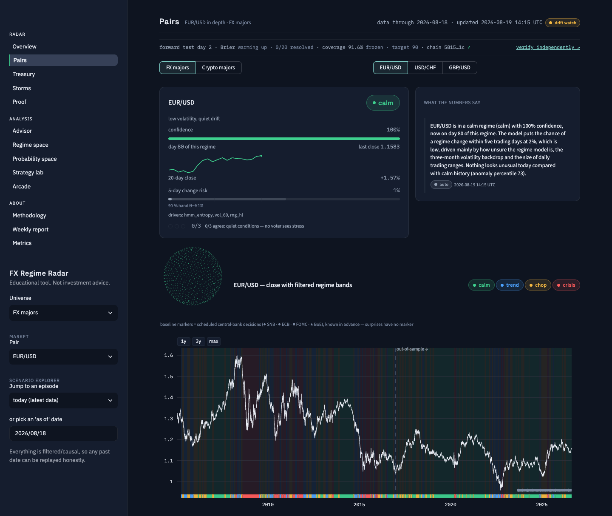
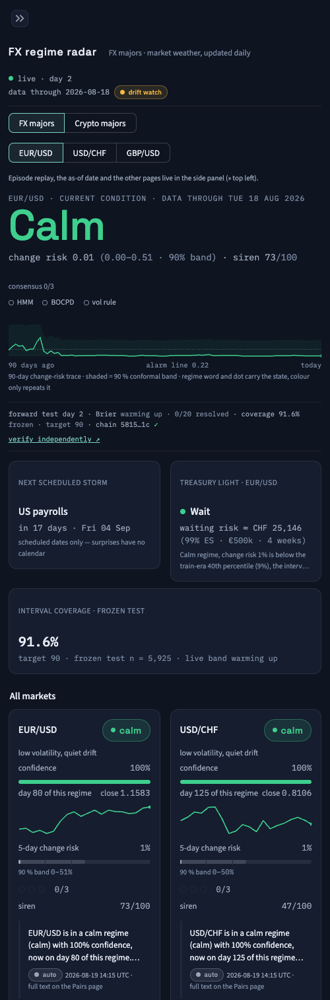
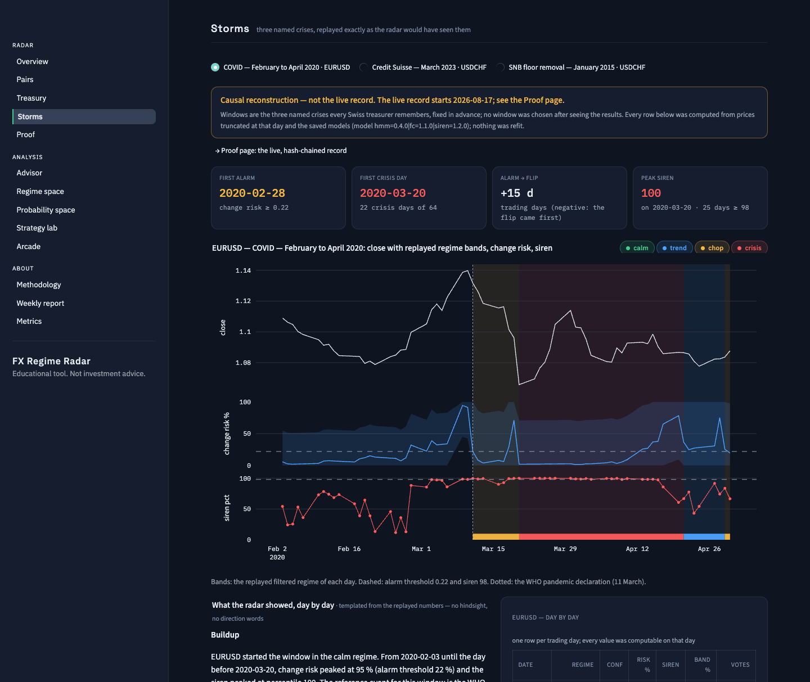
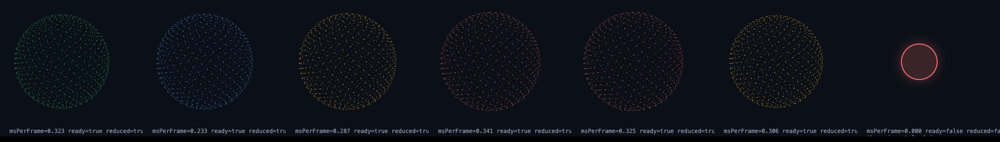

A trust-first interface
For a risk product, credibility out-attracts flash. The interface was evolved to a single target mock-up: the full market state readable in three seconds from two metres, the evidence of the record never below the fold, one ambient element and nothing else that moves.
17.1 One token file, enforced
design/tokens.json is the only source of colour, type and motion: surfaces (nimbus #0E1420, front #151D2E, a hairline at 8 % white), text (#E8ECF4 / #9AA6B8 / a dim tone lifted from the mock-up's value to clear 4.5:1), regime colours used for data and status only (calm #3ECF8E, trend #4DA3FF, chop #F5B942, crisis #FF5C5C), one accent for links and actions. A tiny loader exposes the tokens to Python; a generator writes the Streamlit theme file, a CSS file and the Rust static tokens; the Plotly template, every matplotlib report figure, the orb's presets, the e-mail report and the widget read from the same place. make lint-ui runs in CI and fails on any hex literal anywhere else; a test checks that every text/surface pair clears 4.5:1 on both surfaces, that no font weight above 500 is used, and that the motion budget is exactly two animations — the orb and the live dot's pulse — both disabled under prefers-reduced-motion. Type is Space Grotesk for the regime word and page titles, IBM Plex Sans for the interface, IBM Plex Mono with tabular figures for every number, hash and ledger value; numbers are right-aligned in tables.
17.2 Two signature structures
The condition banner replaces the old hero row: an eyebrow with the pair and the data-through date; the regime word huge in its colour; one metrics line — change risk with its 90 % band, siren out of 100; the quiet 90-day risk trace with the shaded band; and the three-dot consensus module. Regime is never colour-only — the word and a dot carry the state, colour only repeats it. The trust strip sits under it on every surface: forward-test day count, live Brier against frozen, coverage against the 90 % target, the chain head with its check, and "verify independently". If anything competes with the banner, the element is quieted — the orb moved to the Pairs page for that reason.





17.3 Information architecture
Radar: Overview · Pairs · Treasury · Storms · Proof. Analysis: Advisor · Regime space · Probability space · Strategy lab · Arcade. About: Methodology · Weekly report · Metrics. Every widget had to answer "what does the user decide with this?" or move to Analysis. Empty, loading and error states say what happened and what to do — never apologise, never vague. The app reads artifacts only and paints in about a second.